Deep Learning
Introduction
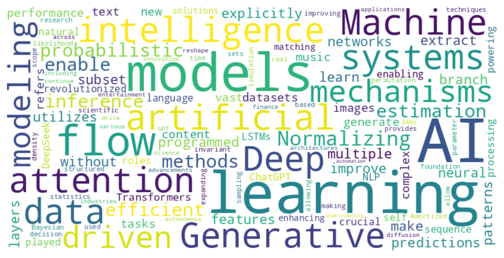
Shahab et al. (2024)
Deep Learning in Python
Python frameworks
PyTorch
- created by Meta (formerly Facebook)
- easy to learn
- focus on research prototypes
- models are not compiled
TensorFlow
- created by Google
- easy to learn
- focus on production
- models are compiled
JAX
- created by Google
- pure, functional approach
- JIT compiled
- fastest in runtime
- most difficult to learn
keras
- created by Google
- API library
- Uses
PyTorch,TensorFlow, orjaxas a backend
keras
- created by Google
- API library
- Uses
PyTorch,TensorFlow, orjaxas a backend
Tensors
- All of Deep Learning revolves around “Tensors”
- Similar to arrays in
numpy - Additional features:
- Values and gradients
- Can be stored on GPUs (optional)
Tensors
Python
- First axis almost always
batch_size(think “sample size”) - Other axes contextual (
timepoint,feature,variable,row,column, etc)
Neural networks
The anatomy of neural networks
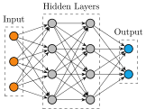Neuron
Regression + non-linear activation
Perceptron
Multiple regressions + non-linear activations
\[ \begin{aligned} z_k &= \sigma \Big(b_k + \sum_{j=1}^J W_{jk}x_j\Big)\\ z &= \sigma \Big(b + x W'\Big) \end{aligned} \]
Perceptron in code
Multi-Layer Perceptron
Multiple “layers” of perceptrons
Multi-Layer Perceptron
Function composition
\[ \begin{aligned} z & = f(x) \text{ where } f = f_L \circ f_{L-1} \circ \dots \circ f_1 \\ z & = f_L(\dots(f_2(f_1(x)))) \\ \end{aligned} \]
- \(W_{jk}^l\): weight of the input \(j\) to the output \(k\) in the layer \(l\)
Multi-Layer Perceptron in Code
Python
import keras
network = keras.models.Sequential([
keras.Input((3,)),
keras.layers.Dense(4, activation="relu"), # 3 inputs, 4 outputs
keras.layers.Dense(4, activation="relu"), # 4 inputs, 4 outputs
keras.layers.Dense(2, activation="softmax") # 4 inputs, 2 outputs
])
network.summary()
x = keras.random.normal((100, 3))
x.shape # TensorShape([100, 3])
z = network(x)
z.shape # TensorShape([100, 2])Multi-Layer Perceptron in Code
Python
import keras
network = keras.models.Sequential([
keras.Input((3,)),
keras.layers.Dense(4, activation="relu"), # 3 inputs, 4 outputs
keras.layers.Dense(4, activation="relu"), # 4 inputs, 4 outputs
keras.layers.Dense(2, activation="softmax") # 4 inputs, 2 outputs
])
network.summary()
x = keras.random.normal((100, 3))
x.shape # TensorShape([100, 3])
z = network(x)
z.shape # TensorShape([100, 2])Activation functions
Why activation functions?
A composition of linear functions is itself a linear function
Non-linear activations introduces non-linearity
\(\rightarrow\) Represent any non-linear function
Often used for output range control
What is an activation function?
- Basic idea: Neuron “firing activity” based on its internal state
- Requirements:
- Non-linearity (expressiveness)
- Differentiability (training)
- Efficiency (scalability)
- Many options (Kunc & Kléma, 2024)
Activation functions
\[ \tanh{(x)} = \frac{e^x - e^{-x}}{e^x + e^{-x}} \]
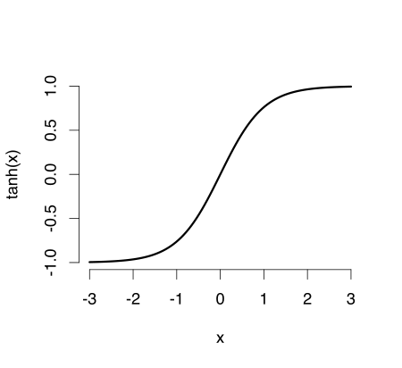Activation functions
\[ \text{ReLU}(x) = \begin{cases} 0, x \leq 0 \\ x, x > 0\end{cases} \]
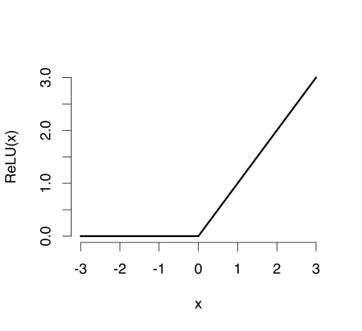Activation functions
\[ \text{softplus}(x) = \log(1 + e^x) \]
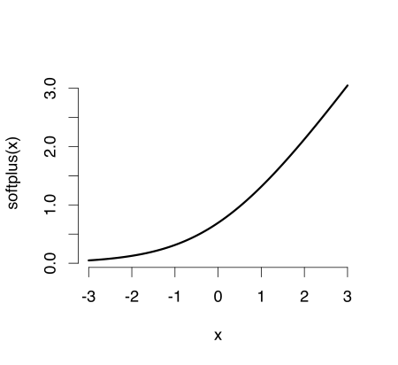 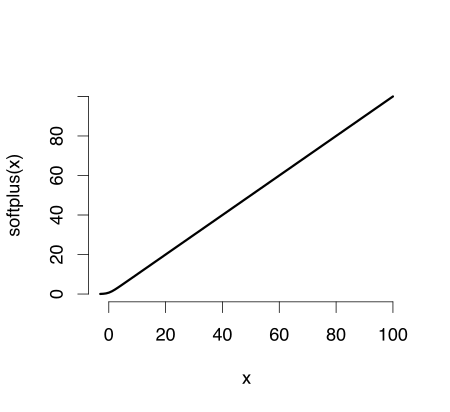
Activation functions
\[ \sigma(x) = \frac{1}{1 + e^{-x}} \]
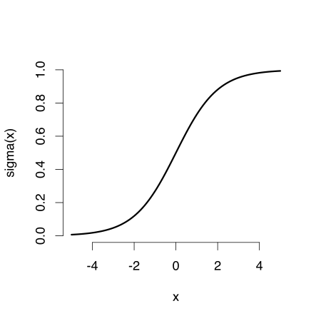Activation functions
\[ \text{softmax}(x)_i = \frac{e^{x_i}}{\sum_{j=1}^{J} e^{x_j}} \]
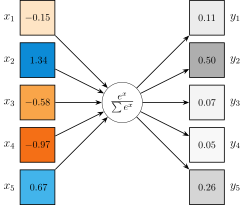Training networks
Training networks
- Networks take an input and produce an output
- The output depends on the weights and biases (parameters) of the neurons
- Training: Adjusting the network parameters
Ingredients
- Network
- What is the network architecture?
- What are the parameters of the network \(\theta\)?
- Data
- What information do we have available?
- Goal
- What do we want the network to do?
Loss function
- The goal is operationalized by a loss function
\[ \mathcal{L}(x; \theta) \]
- \(\theta\): Network parameters
- \(x\): Data
Training networks
Minimise the loss with respect to the model parameters
\[ \operatorname*{argmin}_{\theta} \mathcal{L}(x; \theta) \]

Optimization
Second order derivatives
- e.g., Newton’s method
- Few slow steps
- Small data
First order derivatives
- e.g., Gradient descent
- Many cheap steps
- Large data
Function values & heuristics
- e.g., Nelder-Mead, BFGS, Differential evolution, …
Gradient descent (GD)
\[ \theta_{n+1} = \theta_n - \gamma \Delta_\theta \mathcal{L}(x; \theta_n) \]
- \(\theta_{n+1}\): New network weights
- \(\theta_n\): Current network weights
- \(\gamma\): Learning rate
- \(\Delta_\theta\): Gradient (matrix of partial derivatives w.r.t network weights)
- \(\mathcal{L}\): Loss function
- \(x\): Data
Stochastic gradient descent (SGD)
GD
- Run through all data to do a single step
SGD
- Make a single step based on a subset of the data (minibatch)
Learning rate (LR)
\[ \theta_{n+1} = \theta_n - \gamma \Delta_\theta \mathcal{L}(x; \theta_n) \]
- Too small LR: Too many steps to converge
- Too large LR: May not converge
Adaptive gradient
- Adjust LR based on multiple iterations
- Individual LR per parameter
\[ g_n = \Delta_\theta \mathcal{L}(x; \theta_n) \]
\[ G_n = G_{n-1} + g_n^2 \]
\[ \theta_{n+1} = \theta_n + \frac{\gamma}{\sqrt{G_n} + \epsilon} g_n \]
Momentum
- Accumulate gradient over iterations
- Smoother parameter updates
- Avoid getting stuck in local minima, saddle points
\[ m_n = \beta m_{n-1} + (1-\beta) \Delta_\theta \mathcal{L}(x; \theta_n) \]
\[ \theta_{n+1} = \theta_n - \gamma m_n \]
Adam (Kingma & Ba, 2014)
\[ g_n = \Delta_\theta \mathcal{L}(x; \theta_n) \] \[ \begin{aligned} m_n & = \beta_1 m_{n-1} + (1-\beta_1) g_n; & \hat{m}_n & = \frac{m_n}{1 - \beta_1^n} \\ v_n & = \beta_2 v_{n-1} + (1-\beta_2) g_n^2; & \hat{v}_n & = \frac{v_n}{1 - \beta_1^n}\\ \end{aligned} \]
\[ \theta_{n+1} = \theta_n - \frac{\gamma}{\sqrt{\hat{v}_n} + \epsilon} \hat{m}_t \]
Evaluating gradients
\[\Delta_\theta \mathcal{L}(x; \theta_n)\]
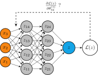Backpropagation
\[ \frac{\partial \mathcal{L}}{\partial \theta_l} = \frac{\partial \mathcal{L}}{\partial z_L} \frac{\partial z_L}{\partial z_{L-1}} \dots \frac{\partial z_l}{\partial \theta_l} \]
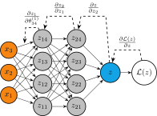Tips & tricks
Kernel trick
- Non-linear patterns in the data
- Project data into a higher-dimensional space

\(\rightarrow\) networks to add dimensions
Learning rate scheduling
- Change LR through training
- Typically: Quick warm up to target, then decay to zero
- Improved convergence
Issues with gradients
Gradients can become excessively large or vanishingly small
Exploding gradients
- Unstable training (jumping erratically)
- Numerical issues (overflow)
Remedies
- Batch normalization
- Gradient clipping
Vanishing gradients
- Slow training (barely moving)
- Numerical issues (underflow)
Remedies
- Batch normalization
- Different activation functions
- Residual connections
Batch normalization
- Keep output close to mean 0 and variance 1
Batch normalization
- Keep output close to mean 0 and variance 1
Gradient clipping
Scale down gradients if they exceed certain threshold
Value clipping
- Restrict gradients to a specified range
- Each gradient clipped individually
Norm clipping
- Restrict the size (norm) of the gradient to a specified range
- All gradients rescaled so that the norm becomes smaller
Residual / skip connections
- Add output of a layer with its input
- Removes vanishing gradients
- Layer learns the “residual”: \(f(x) = r(x) + x\)
Guards against overfiting
Large networks tend to overfit

Guards against overfiting
Large networks tend to overfit
Remedies
- Early stopping
- Regularization
- Dropout
- Add more data
- …
Early stopping
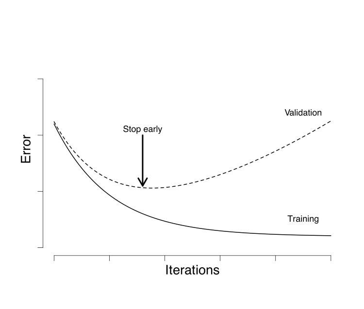Early stopping
Regularization
Add (weighted) norm of the parameters to the loss \[ \mathcal{L}(x, \theta) = \mathcal{L}_0(x, \theta) + \lambda ||\theta|| \]
L1
- \(||\theta||_1 = \sum|\theta|\)
- Encourages sparse weights
- Discourages large weights
- Feature selection/pruning
L2
- \(||\theta||_2 = \sum\theta^2\)
- Encourages spread out weights
- Discourages large weights
Regularization
Python
- In
keraskernel_regularizer: Weightsbias_regularizer: Biasactivity_regularizer: Layer output
Dropout
During training, “turn off” each activation with a probability \(p\)

- Better generalization
- Reduced dependence on single neurons
- Reduced expressiveness
- Increased variance during training
Dropout
Python
network = keras.Sequential([
keras.Input((2,)),
keras.layers.Dense(64, activation="relu"),
keras.layers.Dropout(0.1),
keras.layers.Dense(64, activation="relu"),
keras.layers.Dropout(0.05),
keras.layers.Dense(10, activation="softmax")
])
x = keras.random.normal((100, 2))
network(x)
network(x, training=True)Dropout
Python
network = keras.Sequential([
keras.Input((2,)),
keras.layers.Dense(64, activation="relu"),
keras.layers.Dropout(0.1),
keras.layers.Dense(64, activation="relu"),
keras.layers.Dropout(0.05),
keras.layers.Dense(10, activation="softmax")
])
x = keras.random.normal((100, 2))
network(x)
network(x, training=True)Special neural architectures
MLP
Pros
- Conceptually simple, universal function approximator
- Easy to train, established
- Almost zero assumptions about data
Cons
- Inefficient in high dimensions (many parameters)
- Works only with fixed size input/output
- Almost zero assumptions about data
Assumptions: Data types
Examples:
- Pictures
- Sequences (text, time-series)
- Sets
\(\rightarrow\) leverage properties of data to our advantage by building networks that make correct assumptions
Recurrent neural network (RNN)
- Works for sequences of different lengths
- Maintain a hidden state \(h_t = \sigma_h(W_h * h_{t-1} + W_x x_t + b_h)\)
- Output depends on hidden state \(y_t = \sigma_y(W_g * h_t + b_y)\)
Issues
- Sequential updating
- Limited long-term memory
- Vanishing gradient

Long short-term memory (LSTM)
- Learn to what to “forget” (forget gate) and what to “remember” (input gate)
- Cell state can carry over long term dependencies

Attention mechanism
- Sequential updating is slow
- Limited memory (even for LSTM)
Solution
- Use positional encoding (“concatenate with time variable”)
- Paralellize the whole computation
- “Attention”: Focus on the relevant parts of the sentence.
Attention
- Query: \(Q = XW_Q\)
- Key: \(K=XW_K\)
- Value: \(V=XW_V\)
\[ \text{Attention}(Q, K, V) = \text{softmax}(QK^{\text{T}})V \]
Attention
Attention
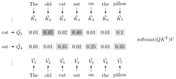Attention
- Cross-attention
- Keys and queries are computed from different sources
- e.g., original (keys) and translated (queries) text
- Multihead attention
- Multiple attention blocks in parallel
- Each block “attends” to different representations
- Transformers: Multiple layers of Multihead attention layers and MLP
Set architectures
- What if we do not have a fixed order?
- Instead, we have sets
Set architectures
Permutation invariant function: \(f(x) = f(\pi(x))\)
Embeddings of sets
- Handle different set sizes
- Permutation invariant
- Interactions between elements
Deep Set
\[ f(X = \{ x_i \}) = \rho \left( \sigma(\tau(X)) \right) \]
- \(\tau\): Permutation equivariant function
- \(\sigma\): Permutation invariant pooling function (sum, mean)
- \(\rho\): Any function
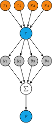
Deep Set
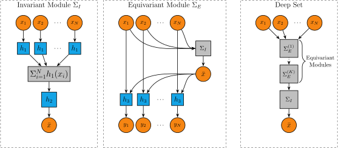Examples & further references
- Keras code examples
- Tensorflow playground
- Chollet (2021), GitHub
- Urban & Gates (2021)